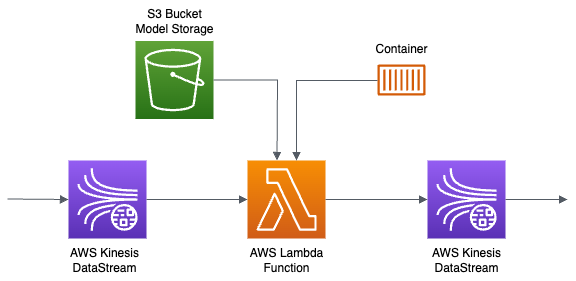
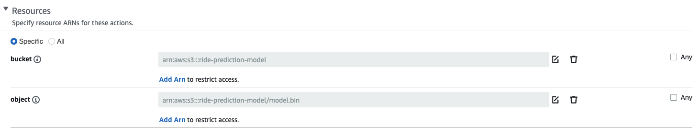

This post explains the deployment of a Dockerized ML model using AWS Kinesis as the event stream and AWS Lambda as the consumer. The Dockerized ML model will be registered on AWS ECR.
The workflow involves triggering an AWS Lambda function upon receiving a request on AWS Kinesis, which will then invoke the ML model and push the results to another AWS Kinesis stream.

The interaction with AWS services and resources will be performed from a local machine using the AWS CLI.
Prerequisites
To follow along with this post, you’ll need the AWS Command Line Interface (AWS CLI) version 2. To check if you have AWS CLI installed, run the following command:
Create an IAM role
Create an IAM role that you can use to access AWS services and resources. Follow these steps:
- Sign in to the AWS Management Console and open the roles page in the IAM console.
- Click on Create role.
- Give the role the following properties:
- Trusted entity: AWS service
- Use case: Lambda
- Permissions: AWSLambdaKinesisExecutionRole
- Role name:
lamdba-kinesis-role
The AWSLambdaKinesisExecutionRole policy has the permissions that the function needs to read items from Kinesis and write logs to CloudWatch Logs.
Create a Lambda function
We’ll create a Lambda function that reads records from a Kinesis stream and writes them to CloudWatch Logs. Follow these steps:
- Open the Lambda console in the AWS Management Console.
- Choose Create function.
- Give the function the following properties:
- Select Author from scratch.
- Function name:
ride-duration-prediction-test - Runtime: Python 3.9
- Permissions: Toggle the
Change default execution roleand selectUse an existing role. Choose thelamdba-kinesis-rolerole that you created earlier.
- Choose Create function.
Once the function is created, you’ll see code editor with a file name lambda_function.py created for you.
Inside the file you might have noticed the lambda_handler function. The handler function is the entry point for Lambda functions. It’s the python function that get’s executed when the Lambda function is invoked.
The handler function always takes two arguments: event and context.
Event
The event argument is the data that’s passed to the function when it’s invoked. For example, if the lambda function is invoked by an HTTP request, the event argument will contain information about the HTTP request.
Think of the event argument as the input to the function, the function then processes the input based on some logic and may or may not return an output. The functions can be triggered by different events such as an HTTP request, a message in a queue, a file upload to S3, etc.
Context
The context argument provides information about the function and the execution environment. For example, the context argument contains the name of the function, the function version, the execution time, etc.
context is a Python object that implements methods and has properties that you can use to get information about the function and the execution environment. For example, you can use the context.get_remaining_time_in_millis() method to get the remaining execution time for the function in milliseconds.
Let’s add some code to the lambda_handler function to log the event and context arguments:
import json
def lambda_handler(event, context):
print("Received event: " + json.dumps(event))
print("Remaining time (ms): " + str(context.get_remaining_time_in_millis()))
return {
'statusCode': 200,
'body': json.dumps('Hello from Lambda!')
}Everytime you make changes to the Lambda function, you need to deploy the changes. You can deploy the changes by clicking on the Deploy button in the top right corner of the Lambda console.
To test the function, click on the Test button and create a new test event. Give the test event a name, for example test-event.
You’ll notice there is a drop down for the event template. For now we’ll use the default hello-world template, however I encourage you to explore the other templates.
Click on the Save button and then click on the Test button again.
Create a Kinesis stream
Create a Kinesis stream that you can use to send data to the Lambda function. Follow these steps:
- Open the Kinesis console in the AWS Management Console.
- Choose Kinesis Data Streams and then choose Create data stream.
- Give the stream the following properties:
- Stream name:
ride-event - Capacity mode: Provisioned
- Provisioned shards: 1
- Stream name:
- Choose Create data stream.
Add a trigger to the Lambda function
A trigger is a configurable resource that enables an AWS service to invoke your function in response to specific events or conditions. Your function can be associated with multiple triggers, allowing it to respond to various event-driven scenarios.
Add a trigger to the Lambda function that we created earlier. Follow these steps:
- Navigate back to the
ride-duration-prediction-testLambda function in the Lambda console. - In the Function overview section, choose Add trigger button.
- Choose Kinesis from the list of triggers.
- Give the trigger the following properties:
- Kinesis stream:
ride-event
- Kinesis stream:
- Choose Add.
Create a IAM user and policy
To interact with AWS services and resources from your local machine we need to create an IAM user and policy.
The IAM user represents the human user or workload who uses the IAM user to interact with AWS. A user in AWS consists of a name and credentials.
The credentials are used to authenticate the user when they interact with AWS.
The IAM policy defines the permissions that the user has to access AWS services and resources. We attach the policy to the user to grant the user permissions to access AWS services and resources.
Follow these steps to create an IAM user and policy:
Policy
- Sign in to the AWS Management Console and open the policies page in the IAM console.
- Choose Create policy.
- Search for
kinesisand click on it. - Under the Access level section, for Write select the PutRecord and PutRecords actions.
- Under the Resources section, select Specific and then Add ARN.
- Choose the Text tab and Copy-Paste the ARN of the Kinesis stream that you created earlier. You can find the ARN of the Kinesis stream in the Kinesis console under the Data stream summary section.
- Choose Add ARNs and then Next.
- Give the policy the following properties:
- Name:
kinesis-write-policy - Description:
Allows write access to the Kinesis stream
- Name:
- Choose Create policy.
User
- Sign in to the AWS Management Console and open the users page in the IAM console.
- Choose Add users.
- Name the user
kinesis-user. - Select Add user to group and then Create group.
- Name the group
kinesis-write-group. - Search for the policy that you created earlier and select it. In this case it’s
kinesis-write-policy. - Choose Create user group.
- Select the user group that you created earlier and choose Next.
- Choose Create user.
Create access keys for the IAM user
Select the IAM user that you created earlier.
- Choose Security credentials.
- Under the Access keys section, choose Create access key.
- Choose Other and then Next.
- Choose Create access key.
Make sure you download the access key file. You will not be able to access the secret access key again after you close the dialog box.
Next we’ll configure the AWS CLI to use the access keys that we just created.
Make sure you have the AWS CLI installed.
Run the following command to configure the AWS CLI:
Enter the access key ID and secret access key that you downloaded earlier. For the default region name, enter the region that you created the Kinesis stream in.
Send data to the Kinesis stream
Now that we have a Lambda function and a Kinesis stream, let’s send some data to the Kinesis stream. Follow these steps:
Open terminal or command prompt and run the following command to send data to the Kinesis stream:
KINESIS_STREAM_NAME=ride-event
aws kinesis put-record \
--stream-name ${KINESIS_STREAM_NAME} \
--partition-key 1 \
--data "Hello, this is a test." \
--cli-binary-format raw-in-base64-outYou should see the following output:
{
"ShardId": "shardId-000000000000",
"SequenceNumber": "49605507193692568746561138951989197221575295936257281026"
}Press q to exit the output.
View the logs
Now that we have sent some data to the Kinesis stream, let’s view the logs in CloudWatch Logs. Follow these steps:
- Navigate back to the
ride-duration-prediction-testLambda function in the Lambda console. - Choose the Monitor tab and then choose Logs.
- Choose
View CloudWatch Logsto view the logs in CloudWatch Logs. - Under the Log streams tab, choose the latest log stream.
You’ll see the log messages. Find the log message that says Received event: and you’ll see the request body that we sent to the Kinesis stream. It should look something like this:
Received event: {
"Records": [
{
"kinesis": {
"kinesisSchemaVersion": "1.0",
"partitionKey": "1",
"sequenceNumber": "49641836346418405924036776538604986498724303454435540994",
"data": "SGVsbG8sIFRoaXMgaXMgYSB0ZXN0IG1lc3NhZ2U=",
"approximateArrivalTimestamp": 1687115491.219
},
"eventSource": "aws:kinesis",
"eventVersion": "1.0",
"eventID": "shardId-000000000000:49641836346418405924036776538604986498724303454435540994",
"eventName": "aws:kinesis:record",
"invokeIdentityArn": "arn:aws:iam::247894370182:role/lamdba-kinesis-role",
"awsRegion": "us-east-1",
"eventSourceARN": "arn:aws:kinesis:us-east-1:247894370182:stream/ride-event"
}
]
}You’ll notice that the data is base64 encoded. Let’s decode the data and print it to the logs. Add the following code to the lambda_handler function:
# Add the following code to the lambda_handler function
import base64
record = event['Records'][0]
print("Decoded message: " + base64.b64decode(record['kinesis']['data']).decode('utf-8'))Deploy the changes and send some data to the Kinesis stream again. You should see the decoded message in the logs.
Everytime you make changes and deploy the Lambda function, there will be a new entry in the Log streams tab. Make sure you choose the latest log stream.
Usually after the model prediction is made, we would want to send the prediction to another service. In the next section, we’ll send the prediction to another Kinesis stream.
Send the prediction to another Kinesis stream
In this section, we’ll send the prediction to another Kinesis stream. Follow these steps:
- Open the Kinesis console in the AWS Management Console.
- Choose Kinesis Data Streams and then choose Create data stream.
- Give the stream the following properties:
- Stream name:
ride-prediction - Capacity mode: Provisioned
- Provisioned shards: 1
- Stream name:
- Choose Create data stream.
Now, that we have created the Kinesis stream, we want the lambda function to send the prediction to the Kinesis stream.
However, lambda function doesn’t have the permission to write to the Kinesis stream. Let’s add the permission to the lambda-kinesis-role role.
Follow these steps to create a policy and attach it to the role:
Create a policy
- Sign in to the AWS Management Console and open the policies page in the IAM console.
- Choose Create policy.
- Search for
kinesisand click on it. - Under the Access level section, for Write select the PutRecord and PutRecords actions.
- Under the Resources section, select Specific and then Add ARN.
- Choose the Text tab and Copy-Paste the ARN of the Kinesis stream for
ride-prediction. You can find the ARN of the Kinesis stream in the Kinesis console under the Data stream summary section. - Choose Add ARNs and then Next.
- Give the policy the following properties:
- Name:
kinesis-write-policy-prediction - Description:
Allows write access to the Prediction Kinesis stream
- Name:
- Choose Create policy.
Attach the policy to the role
- Sign in to the AWS Management Console and open the roles page in the IAM console.
- Search for
lambda-kinesis-roleand click on it. - Under the Add Permissions dropdown, click on Attach policies.
- Search for
kinesis-write-policy-predictionand click on it. Chooes Add Permissions.
Before moving forward to the next section, let’s review what we have done so far.
Review what we have done so far [Optional]
I’ll divide the review into three parts:
Part 1: Create a Lambda function and a Kinesis stream
- We created a Lambda function and explained how it works.
- We also tried to modify the Lambda function and tested it.
- We created a Kinesis stream that will receive the data.
- We added a Kinesis trigger to the Lambda function, so that the Lambda function is invoked when data is sent to the Kinesis stream.
- However, the Lambda function doesn’t have the permission to read from the Kinesis stream. So, we added the
AWSLambdaKinesisExecutionRolepermission to thelambda-kinesis-rolerole.
Part 2: Send data to the Kinesis stream
- To test what we have done in part 1, we sent some data to the Kinesis stream.
- Since, we are performing this action from our local machine, we need to have the AWS CLI installed and configured.
- For a individual (user) to interact with the AWS resources, we created an IAM user. However, what are the permissions that we gave to the IAM user? We gave the permissions to send data to the Kinesis stream. We did this by attaching the
kinesis-write-policypolicy to the IAM user, allowing the user to write onride-eventKinesis stream. - Similar to how we use API key to authenticate ourselves to a service, we used the
access keyandsecret keyof the IAM user to authenticate ourselves to AWS. - Lastly, we used the AWS CLI to send data to the Kinesis stream and view the logs in CloudWatch Logs.
Part 3: Send the prediction to another Kinesis stream
- We created another Kinesis stream called
ride-predictionwhich will receive the prediction from the Lambda function. - However, does the Lambda function have the permission to write to the Kinesis stream? No, it doesn’t. So, we created a policy called
kinesis-write-policy-predictionthat allows the Lambda function to write to the Kinesis stream. - We attached this policy to the
lambda-kinesis-rolerole. - We’ll now update the Lambda function to send the prediction to the Kinesis stream.
Update the Lambda function to send the prediction to the Kinesis stream
Now that we have created the policy and attached it to the role, let’s update the lambda function to send the prediction to the Kinesis stream.
import os
import json
import boto3
import base64
# Create a Kinesis client
kinesis_client = boto3.client('kinesis')
# Get the name of the Kinesis stream from the environment variable
PREDICTIONS_STREAM_NAME = os.getenv('PREDICTIONS_STREAM_NAME')
def lambda_handler(event, context):
print("Received event: " + json.dumps(event))
record = event['Records'][0]
decoded_data = base64.b64decode(record['kinesis']['data']).decode('utf-8')
print("Decoded message: " + decoded_data)
ride_event = json.loads(decoded_data)
ride_id = ride_event['ride_id']
# Create a dummy prediction
prediction = {
'model': 'ride_duration_prediction_model',
'version': '12345',
'prediction': {
'ride_id': ride_id,
'ride_duration': 10.0
}
}
# Write the prediction on the prediction-kinesis-stream
kinesis_client.put_record(
StreamName=PREDICTIONS_STREAM_NAME,
Data=json.dumps(prediction),
PartitionKey=str(ride_id)
)
return {
'statusCode': 200,
'body': json.dumps('Hello from Lambda!')
}We used boto3 to create a Kinesis client. We then used the put_record method to write the prediction to the Kinesis stream. We used the PREDICTIONS_STREAM_NAME environment variable to get the name of the Kinesis stream.
Deploy the Lambda function.
Setup the environment variable by following these steps:
- Go to the Lambda console and click on the Configuration tab.
- Under the Environment variables section, click on Edit.
- Choose Add environment variable.
- Give the environment variable the following properties:
- Key:
PREDICTIONS_STREAM_NAME - Value:
ride-prediction
- Key:
- Click on Save.
Now, that we have updated the Lambda function, let’s test it.
Test the Lambda function
Use the following code to test the Lambda function:
KINESIS_STREAM_NAME=ride-event
aws kinesis put-record \
--stream-name ${KINESIS_STREAM_NAME} \
--partition-key 1 \
--data '{"ride_id": 1}' \
--cli-binary-format raw-in-base64-outLike before you can view the logs in CloudWatch Logs.
View the prediction in the Kinesis stream
For the user to view the prediction, we need to give the user the permission to read from the Kinesis stream. We’ll do this by attaching the kinesis-read-policy-prediction policy to the kinesis-user.
Create the kinesis-read-policy-prediction policy by following these steps:
- Sign in to the AWS Management Console and open the policies page in the IAM console.
- Choose Create policy.
- Search for
kinesisand click on it. - Under the Access level section, for Read select the GetRecords and GetShardIterator actions.
- Under the Resources section, select Specific and then Add ARN.
- Choose the Text tab and Copy-Paste the ARN of the Kinesis stream for
ride-prediction. You can find the ARN of the Kinesis stream in the Kinesis console under the Data stream summary section. - Choose Add ARNs and then Next.
- Give the policy the following properties:
- Name:
kinesis-read-policy-prediction - Description:
Allows read access to the Prediction Kinesis stream
- Name:
- Choose Create policy.
Attach the kinesis-read-policy-prediction policy to the kinesis-user by following these steps:
- Sign in to the AWS Management Console and open the users page in the IAM console.
- Choose kinesis-user.
- Choose the Add Permissions tab and then Add permissions.
- Choose Attach existing policies directly.
- Search for
kinesis-read-policy-predictionand select it. Choose Next. - Choose Add permissions.
Now that we push the prediction to the prediction stream, we can view the prediction in the Kinesis stream. Use the following code in the terminal to view the prediction:
KINESIS_STREAM_OUTPUT='ride-prediction'
# Get the shard id, since we only have one shard we can hardcode it
SHARD='shardId-000000000000'
# Get the shard iterator
SHARD_ITERATOR=$(aws kinesis \
get-shard-iterator \
--shard-id ${SHARD} \
--shard-iterator-type TRIM_HORIZON \
--stream-name ${KINESIS_STREAM_OUTPUT} \
--query 'ShardIterator' \
)
# Get the records
RESULT=$(aws kinesis get-records --shard-iterator $SHARD_ITERATOR)
# Print the data
echo ${RESULT}
# Print the data in a more readable format for a specific record
echo ${RESULT} | jq -r '.Records[0].Data' | base64 --decodeA shard iterator specifies the shard position from which to start reading data records sequentially.
There are many types of shard iterators. We are using the TRIM_HORIZON shard iterator type. This type causes the shard iterator to point to the last untrimmed record in the shard in the system, which is the oldest data record in the shard.
For more information on shard iterators, see here.
We get the data from the iterator and print it.
jq is a lightweight and flexible command-line JSON processor. If you don’t have jq installed on your machine, you can install it by following these instructions
Dockerize the prediction service
Until now, we have been using a dummy script to generate the prediction. In this section, we will upload model to S3 and then use it to generate the prediction. We will use Docker to containerize the prediction service.
Upload the model to S3
We will use the lin_reg.bin file that I had created for you. You can find it here. Download the file and upload it to the s3://ride-prediction-model bucket. Follow these steps to upload the file:
- Go to the S3 console and click on the
Create bucketbutton. - Give the bucket the following properties:
- Bucket name:
ride-prediction-model
- Bucket name:
- Click on Create Bucket.
- Click on the bucket name.
- Click on the Upload button.
- Click on Add files and select the
lin_reg.binfile. - Click on Upload.
Update the lambda function
Locally create a lambda_function.py file with the following code:
import os
import json
import s3fs
import boto3
import base64
import pickle
s3 = s3fs.S3FileSystem(anon=False)
kinesis_client = boto3.client('kinesis')
PREDICTIONS_STREAM_NAME = os.getenv('PREDICTIONS_STREAM_NAME')
file = 's3://ride-prediction-model/lin_reg.bin'
with s3.open(file, 'rb') as handle:
dv, model = pickle.load(handle)
TEST_RUN = os.getenv('TEST_RUN', 'False') == 'True'
def prepare_features(ride):
features = {}
features['PU_DO'] = '%s_%s' % (ride['PULocationID'], ride['DOLocationID'])
features['trip_distance'] = ride['trip_distance']
return features
def predict(features):
X = dv.transform(features)
pred = model.predict(X)
return float(pred[0])
def lambda_handler(event, context):
predictions_events = []
for record in event['Records']:
encoded_data = record['kinesis']['data']
decoded_data = base64.b64decode(encoded_data).decode('utf-8')
ride_event = json.loads(decoded_data)
ride = ride_event['ride']
ride_id = ride_event['ride_id']
features = prepare_features(ride)
prediction = predict(features)
prediction_event = {
'model': 'ride_duration_prediction_model',
'version': '123',
'prediction': {
'ride_duration': prediction,
'ride_id': ride_id
}
}
# Comment the below if statement if you want to test the lambda function locally
if not TEST_RUN:
kinesis_client.put_record(
StreamName=PREDICTIONS_STREAM_NAME,
Data=json.dumps(prediction_event),
PartitionKey=str(ride_id)
)
predictions_events.append(prediction_event)
return {
'predictions': predictions_events
}Create a virtual environment
Create a virtual environment and install the required packages:
Create a Dockerfile
Create a Dockerfile with the following content:
Build the Docker image
Build the Docker image:
Give lambda access to s3
We need to give the lambda function access to the ride-prediction-model bucket. Follow these steps to give the lambda function access to the bucket:
Create the s3-list-read policy by following these steps:
- Sign in to the AWS Management Console and open the policies page in the IAM console.
- Choose Create policy.
- Search for
s3and click on it. - Under the Access level section, for Read select the GetObject action and List select the ListBucket action.
- Under the Resources section, select Specific and then Add ARN. You’ll need to add the ARNs for s3 bucket and
lin_reg.binobject in s3. See the image below for an example.

- Choose the Text tab and Copy-Paste the ARN of the S3 bucket and object.
- Choose Add ARNs and then Next.
- Give the policy the following properties:
- Name:
s3-list-read - Description:
Allows lambda to list and read objects from s3
- Name:
- Choose Create policy.
Attach the policy to the role:
- Sign in to the AWS Management Console and open the roles page in the IAM console.
- Search for
lambda-kinesis-roleand click on it. - Under the Add Permissions dropdown, click on Attach policies.
- Search for
s3-list-readand click on it. Chooes Add Permissions.
Create ECR Repository
We will use ECR to store the Docker image. Follow these steps to create a repository in ECR:
- Go to the ECR console.
- Click on Create repository.
- Give the repository the following properties:
- Repository name:
duration-model
- Repository name:
- Click on Create repository.
Attach permissions to the user that will push the Docker image to ECR
Create the ecr-read-write policy by following these steps:
- Sign in to the AWS Management Console and open the policies page in the IAM console.
- Choose Create policy.
- Search for
ecrand click on it. - Under the Access level section,
- Read select BatchCheckLayerAvailability and GetAuthorizationToken
- Write select CompleteLayerUpload, InitiateLayerUpload, PutImage, and UploadLayerPart.
- Under the Resources section, select Specific and then Add ARN. You’ll need to add the ARNs for ecr repository.
- Choose the Text tab and Copy-Paste the ARN of the ecr repo.
- Choose Add ARNs and then Next.
- Give the policy the following properties:
- Name:
ecr-read-write - Description:
Allows user to read and write to ecr repo
- Name:
- Choose Create policy.
Attach the policy to the role:
- Sign in to the AWS Management Console and open the roles page in the IAM console.
- Search for
lambda-kinesis-roleand click on it. - Under the Add Permissions dropdown, click on Attach policies.
- Search for
ecr-read-writeand click on it. Chooes Add Permissions.
Upload the Docker image to ECR
Authenticate Docker to an Amazon ECR registry with get-login-password:
# Authenticate Docker to an Amazon ECR registry with get-login-password
aws ecr get-login-password --region <REGION> | docker login --username AWS --password-stdin <AWS_ACCOUNT_ID>.dkr.ecr.us-east-1.amazonaws.comReplace the <REGION> and <AWS_ACCOUNT_ID> with the region and account id of your AWS account.
Tag the Docker image and push it to ECR:
# Store the URI of the ECR repository
REMOTE_URI="<AWS_ACCOUNT_ID>.dkr.ecr.us-east-2.amazonaws.com/duration-model"
REMOTE_TAG="v1"
REMOTE_IMAGE=${REMOTE_URI}:${REMOTE_TAG}
# Tag the local image with the remote image URI
LOCAL_IMAGE="stream-model-duration:v1"
docker tag ${LOCAL_IMAGE} ${REMOTE_IMAGE}
# Push the image to ECR
docker push ${REMOTE_IMAGE}Create a lambda function
We’ll create a lambda function using the docker image that we created. Follow these steps to create the lambda function:
- Go to the lambda console.
- Click on Create function.
- Choose Container image option.
- Give the function the following properties:
- Function name:
ride-duration-prediction - Container image URI: Browse and select the image that we pushed to ECR.
- Function name:
- Toggle the
Change default execution role. - Choose the
Use an existing roleoption. - Select the
lambda-kinesis-rolerole. - Click on Create function.
Setup the environment variable by following these steps:
- Go to the Lambda console and click on the Configuration tab.
- Under the Environment variables section, click on Edit.
- Choose Add environment variable.
- Give the environment variable the following properties:
- Key:
PREDICTIONS_STREAM_NAME - Value:
ride-prediction
- Key:
- Click on Save.
Update the timeout and memory settings by following these steps:
- Go to the Lambda console and click on the Configuration tab.
- Under the General configuration section, click on Edit.
- Increase the Timeout to
30 secondsand Memory to256 MB.
Add a trigger to the lambda function
We’ll add a trigger to the lambda function so that it gets invoked when a new object is created in the ride-prediction-model bucket. Follow these steps to add a trigger to the lambda function:
- Navigate back to the
ride-duration-predictionLambda function in the Lambda console. - In the Function overview section, choose Add trigger button.
- Choose Kinesis from the list of triggers.
- Give the trigger the following properties:
- Kinesis stream:
ride-event
- Kinesis stream:
- Choose Add.
You can delete the ride-duration-prediction-test lambda function that we created earlier. Since the trigger for both the lambda functions is the same, we don’t want to trigger both the lambda functions.
Test the lambda function
We’ll test the lambda function by invoking it with a sample event. Run the following command to invoke the lambda function:
KINESIS_STREAM_INPUT=ride-event
aws kinesis put-record \
--stream-name ${KINESIS_STREAM_INPUT} \
--partition-key 1 \
--data '{"ride": {"PULocationID": 130,"DOLocationID": 205,"trip_distance": 3.66}, "ride_id": 156}' \
--cli-binary-format raw-in-base64-outNavigate to the CloudWatch console and click on Logs. You should see a log stream for the ride-duration-prediction lambda function. Click on the log stream and you should see the log messages from the lambda function.
Similar to how we read the output from the ride-prediction stream, you can follow the same steps to read the output from the ride-prediction stream.
Clean up your resources
To avoid incurring future charges, delete the resources you created unless you want to retain them for future use.
- Delete the
ride-predictionstream. - Delete the
ride-eventstream. - Delete the
ride-duration-predictionlambda function. - Delete the
ride-prediction-modelbucket. - Delete the
duration-modelrepository from ECR. - Delete all the policies, roles, and users that we created.
References
Conclusion
In this article, you learned how to build a real-time streaming application using Kinesis Data Streams and Lambda. Also, dockerized the machine learning model, registered it with ECR, and used it in the lambda function.
I hope you enjoyed this article. If you have any questions, feel free to reach out to me on Twitter or Email.
👏 Upvote if you liked it, 💬 comment if you loved it. Hope to see you guys in the next one. ✌️ Peace!